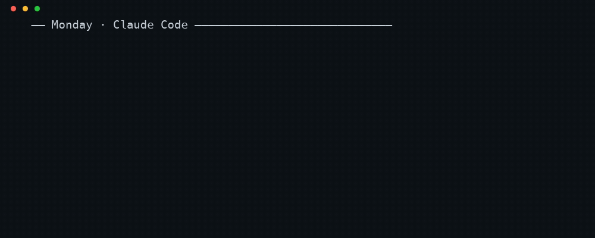

A control panel on localhost.
Search memory, browse the wiki, approve learnings, 👍/👎 what got injected, and watch capture freshness and sync age.

You tell Claude Code a decision. Tomorrow you're in Cursor, and it has no idea. Agentic Brain captures what your coding sessions established, distills it, ranks it, and injects it back into every tool you use, from one store encrypted with your key.
Move your cursor over the brain. It fires.
A set of loops, not a chat product
Purpose-built parsers read Claude Code, Codex, Antigravity, Gemini CLI and Cursor sessions. File watchers pick up new sessions near-live, into one local SQLite store.
brain dream turns raw observations into a compounding wiki that gets revised, not
appended. Resolved struggles become reusable "learnings" you approve.
BM25 over SQLite FTS, plus outcome scores: how often a learning was injected and whether you marked it helpful. Proven usefulness, not keyword overlap alone.
One assembler builds a ~2k-token block into CLAUDE.md, AGENTS.md and
GEMINI.md, inside managed markers. Your own text is never touched.
brain eval asks questions about your own history and scores whether retrieval
surfaced the answer. Every ranking change is gated on that number, not on vibes.
Numbers from evals/longmemeval/RESULTS.md: k=40 rounds, PRF + deep recall, Claude judge. Method and caveats are in the file.
One store, many tools
"Supported" means three different things. Here they are, kept apart.
| Tool | Capture | Push | Pull |
|---|---|---|---|
| Claude Code | native | CLAUDE.md | MCP |
| Codex CLI + desktop | parser + watcher | AGENTS.md | MCP |
| Antigravity CLI | history + watcher | GEMINI.md | MCP |
| Gemini CLI | session parser | GEMINI.md | MCP |
| Cursor | local store | per-repo AGENTS.md | MCP |
| Claude Desktop | server-side | — | MCP |
| ChatGPT desktop | by choice | — | MCP |
Capture sessions flow back in. Push a digest the tool auto-loads, always present. Pull the model can search memory when it decides to.
You own the store
The memory is an age-encrypted blob in a GitHub Release asset on your private repo.
The key lives only in each machine's Keychain. A leaked repo or a leaked token exposes nothing readable.
Why a Release asset and not git? The blob is replaced on every sync. Release assets are replaced in place and don't touch the LFS quota.
And the rest of the brain
Search memory, browse the wiki, approve learnings, 👍/👎 what got injected, and watch capture freshness and sync age.

One command imports your whole history (read-only, verified), wires every tool, and mutes the duplicate startup dump.
# preview, writes nothing
brain switch-from-claude-mem
brain switch-from-claude-mem --apply
brain switch-from-claude-mem --undo
Shipped skills that pull context before work and write decisions back after it.
brain sync on one laptop, brain restore on the next. brain merge reconciles memory from more than one.
Every write path is idempotent. Injection lives inside BRAIN:START/END markers, and MCP wiring is additive: it never touches entries it didn't create.
Settings are redacted before commit, and memory, wiki and learnings are encrypted. Skills and agents stay plaintext so they stay portable.
Hosted memory vs. Agentic Brain
Hosted products solve a real problem well, and with zero setup. Here is the trade, including the rows where this side pays.
age keyKnown limits
launchd are the blockers; neither is fundamental.Install
Requires git, node 22+ and a GitHub account. The installer fetches age, tar and gh if missing.
$ curl -fsSL https://raw.githubusercontent.com/rohithhn/ultra-agentic-memory-public/main/install.sh | bash
No brain yet. Creates your own private data repo, generates your age key into the Keychain, runs the first sync.
A brain on another machine. Clones your data repo, takes your key, decrypts and rebuilds everything.
$ node bin/brain.mjs onboard # wire this machine: MCP, profiles, watchers, daily sync $ node bin/brain.mjs ingest # pull in existing sessions $ node bin/brain.mjs dream # distill observations into the wiki $ node bin/brain.mjs eval # score retrieval on your own history $ npm run serve # control panel on 127.0.0.1:37800